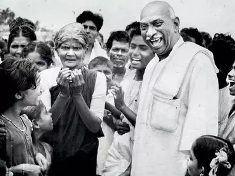

Kamarajar - Karmaverar

K. Kamaraj was born on July 15, 1903, and was a longtime INC leader and the liberation struggle. He served as the state of Madras' third chief minister. Kamarajar was born in Virudhunagar, a state in Tamilnadu. His father’s name was Kumarasamy, while his mother’s name was Sivakami. He discontinued his schooling after his father, Kumarasamy, passed away because there was a lack of money in the family. He was a key figure in India's struggle for freedom and progress.
In the remote south, in a small, underdeveloped village called Virud Patty, Kamaraj was born in July 1903. The farmers who resided in the small village of Virud Patty, to which Kamaraj belonged, were relatively primitive. P Shri Nathan Mayakar Kudumbambam, his father, served as the village head. He had to address every issue the village was having as its leader. Astrologers predicted that Kamaraj would shine just like the Sun when he was a child based on the planet's constellation at the time of his birth. His grandmother, Parvati Ammal, and mother, Sivakami, believed that astrologers made such predictions in order to appease the parents. But they didnt know that the Kamarajar would play a crucial role in Indian history and that his name would shine throughout the nation.
Kamarajar visited a community while on a tour. Meanwhile, he saw a young boy walking by and he halted the car. Kamarajar stepped out of the car and met the child. When Kamarajar asked the young boy why he hadn't gone to school, the youngster replied that there wasn't one in his village and that if he did, then who would feed him. Then Kamarajar questioned whether he would continue to attend class daily if the meal was provided. The young man responded favourably. As soon as possible, Kamarajar took a flight to Chennai to meet with Sundara Vadivelu and make plans to begin implementing the "lunch meals programme also known as the mid-day meal programme.
Kamaraj was chosen to serve as Madras' first chief minister on April 13, 1954. During this time, he pushed to open primary schools in every village and secondary schools in every panchayat. It had started providing a free, mandatory education programme. He organised a lunch for the first time in independent India. He said that many of the state's impoverished children might have at least one nutritious meal. He instituted a free uniform policy in Madras schools.
It is also credited with completing the irrigation systems in Madras quickly and supplying power to every village within 15 years of attaining independence. Jawaharlal Nehru, the Indian Prime Minister, lauded him and declared Madras to be the best-run state in the union.

For more information kindly check the King Maker